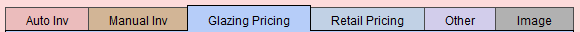
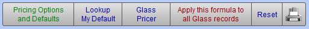
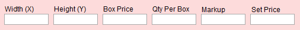
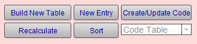
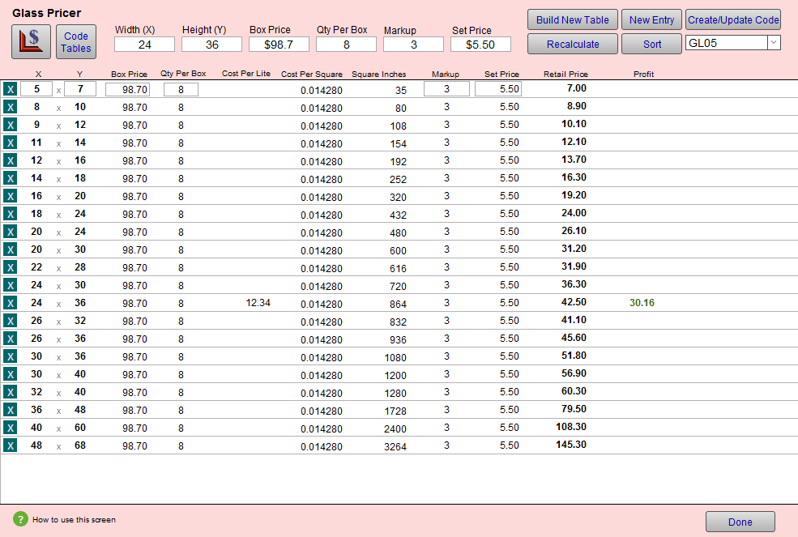

Pricing Glass using the Glass Pricer Feature
The Glass Pricer is a calculator is designed to help you accurately calculate the retail price of your glass based on the sizes you carry and your actual costs. You can create a Code Table to help you price based on Lite Size rather than United Inch.
-
Price your glass by lite size, based on your wholesale cost times a markup plus a set price (Cost x Markup + Set Price). The wholesale cost is determined by the box Price divided by the number of lites per box.
-
Before starting, choose the lite size, e.g. 16x20, 32x40, and the glazing type, e.g. Museum, UltraVue.
-
The Cost Per Square of this size will be used for sizes which you may not carry. It is often easiest to choose a size that is the same box price for multiple sizes, e.g. 16x20 $79 for 23 lites, or 32x40 $79 for 6 lites.
-
See also: Glass Pricer Screen Explained
Video: How to use the Glass Pricer
-
See video: How to use the Glass Pricer
How to use the Glass Pricer
-
Locate a glazing record in the Price Codes and open the Glazing Pricing tab.

-
Click the Glass Pricer button.

The Glass Pricer screen appears. -
In the Glass Pricer window, enter the Width (X) and Height (Y) for the lite size you are working on.

If these fields are already filled (from the last time you used the Glass Pricer), then simply enter new values and click the Build New Table Code button; the old table will be updated. -
Enter the Box Price you pay for a box of those lites.
-
Enter the Qty Per Box.
Tip: If you do not purchase glass by the box, then enter the per lite price in the Box Price field and enter 1 in the Qty Per Box field.
-
Enter the Markup you want to use or experiment with.
-
Optionally enter a Set Price to cover the waste factor, cost of shipping, cutting, etc.
A rule of thumb would be to have a higher set price for more expensive glazing and a lower set price for less expensive glazing. -
Click the Build New Table button.

The table fills with prices calculated for many common sizes. The cost per Lite and Profit will only be displayed for the size you have entered in the pink section at the top.

-
Take a look at a few benchmark sizes, e.g. 8x10, 16x20, 32x40, and see if the prices are in the range you want to charge.
If the larger sizes are too high or low, then adjust the Markup lower or higher.
If the smaller sizes are too high or low, then adjust the Set Price lower or higher.
As you adjust the Markups and Set Prices, you can use the Restore Default button to recalculate the prices back to the original values. -
For some sizes, update the number of lites per box for that size, e.g. a box of 16x20 has 23 lites.
The Retail Price for those sizes recalculates and shows you the Profit on each. Keep an eye on the Cost Per Square. If it is less than the original default amount, then you may want to keep the higher retail price by clicking the Restore Default button located beside the Profit amount.
For larger sizes, you may need to change the Box Price as well as the Lites Per Box. To account for an additional person to move larger glass, you can add an additional amount to the Set Price for each of those. -
Look at the glass sizes shown on the left side of the screen and determine which sizes should be removed.
For example, if you stock 32x40 but do not carry 30x40, then remove 30x40 -- it would not make sense for you to give the customer a discount for the extra time of cutting off two inches of scrap that is not reusable.
Evaluate each size based on the amount of reusable scrap to decide if the size should remain on your list. If a 26x32 is cut from a sheet of 32x40, then you would have a piece of 14x32 remaining. But, if you cut 30x36 from a 32x40, then the scrap of 2" on one side and 4" on the other would not be reusable.
Use the teal square with the white X to remove unwanted sizes. If you accidentally remove a size, then use the New button at the top to add it to the bottom of the list and the Sort button the reorder the list. -
Once the prices are as you want them, take a screenshot (Mac: Command + Shift + 4, Windows: use the Snipping Tool program) and add that graphic to the Image tab on the glass record you were working on.
-
In the Code field, select the Code Table you are updating or take note of the last code used and create a new code name, e.g. GL09
Tip: Code names should be short and simple and do not reflect the product name. Instead, the product name should be entered into the Note field.
-
Click the Sort button to make sure the sizes are properly sorted.
-
Click the Create/Update Code button.
The Code Table screen appears and shows the table you have just added/updated. -
If you do not carry glass over the last size listed, then add to the bottom of the list an overly large size, e.g. 200 x 200 with an outrageous price $9999 to get the attention of the sales rep if the size exceeds the largest available glass size that you stock.
-
In the Code Table Note field, enter a description of the Code Table, e.g. Museum.
-
Change the Date field to today's date.
Tip: Click the square calendar box to the right of the field and select Today: at the bottom of the calendar.
-
Click the Done button.
FrameReady checks to ensure that you do not have any duplicates on any of the code tables -- that would result in an incorrect price being charged. -
You should now be back on the Price Code screen for the item you were pricing. In the top right corner, adjust the Date to show that this item has been updated. Leave the Validation field empty.
Tip: Click the square calendar box to the right of the field and select Today: at the bottom of the calendar.
-
Open the Image tab and use the Insert Image button to locate the screen shot you saved of the calculation screen.
Like any calculator, your chart is lost when you enter another type of glass into the Glass Pricer screen. Adding the screen shot to the image field preserves the information. -
As an extra precaution, and to help you keep your history of pricing, enter the date and basic information about the pricing you entered, e.g. 5/1/2019 - cost $79 (16x20) x 3.5 + $15 set price ($25 for oversize).
-
In the blue Cost field, enter the true cost of the lite size you priced.
-
Enter the dimensions.
You may want to use a larger size (32x40 or 40x60) as this amount is used for the Cost of Goods Used calculation in the lower left corner of your work order screen. If you enter the cost of the 16x20, the calculated cost for a 32x40 never be more than the cost of the 16x20. -
Optionally, if you use the Price Comparison feature, then enter the Set Price and Markup fields (to see the pattern in your pricing or to make sure that you are not marking up a higher grade glass more than a lower grade one).
Note: Any values entered into the Cost, Markup or Set Price fields will NOT affect your retail prices. The Code tables take precedence over all other pricing methods. This data is for easy reference later on.
-
To see your new prices in the Price Sampler (in the Glass Pricing tab), click the Reset button.
© 2023 Adatasol, Inc.